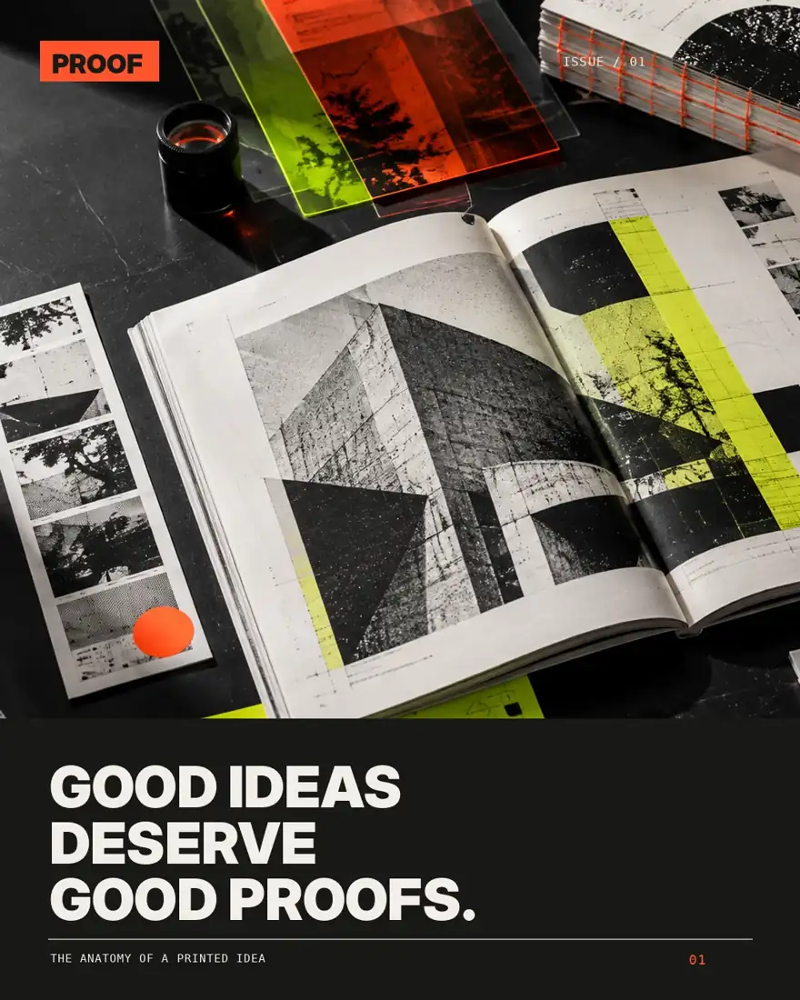
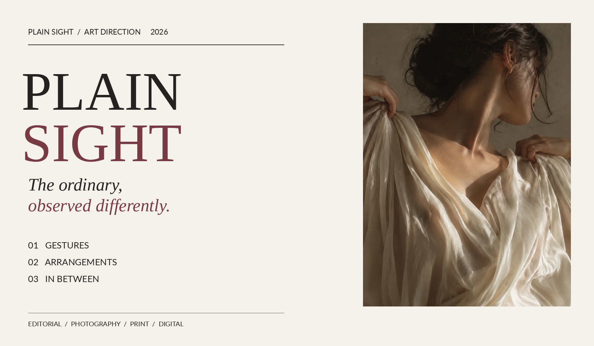
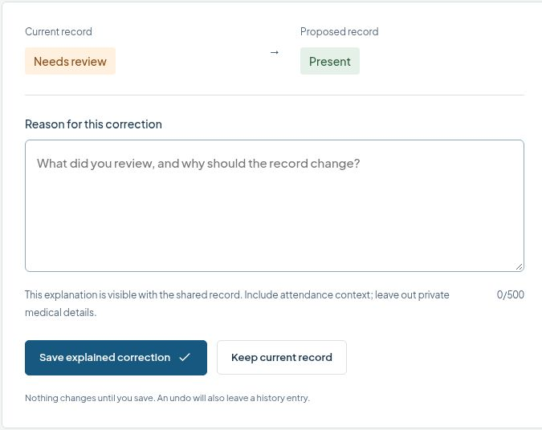

An experimental editorial index · 2026
Look
closer.
01—04 / Archive
Each entry leads to a real, inspectable sample rather than a placeholder image or dead gallery link.
PROOF
One campaign headline, two shapes. Inspect how the typography is recomposed between portrait social and wide advertising formats.
Compare the two layouts ↗
PLAIN SIGHT
Sequencing turns a collection of images into a reading experience. Open consecutive pages and notice how the crop changes the interpretation.
Read the publication ↗
BRUME
Light does the art direction. The email brings an imagined lamp campaign into a narrow, selectable-text format.
Open the HTML email ↗
ImHere
A missed check-in becomes an explained decision. Try the attendance correction form and inspect the student-facing history.
Try a correction ↗
An index, not a disguise.
RED ARCHIVE is an experimental web editorial composition by Jocelyn Martinez, not a separate consultancy or a representation of client research. The four image previews link to existing design work with their original case-study credits. The oversized italic mark, narrow annotation rail, and numbered entries create a repeatable browsing system without hiding the actual artifacts.